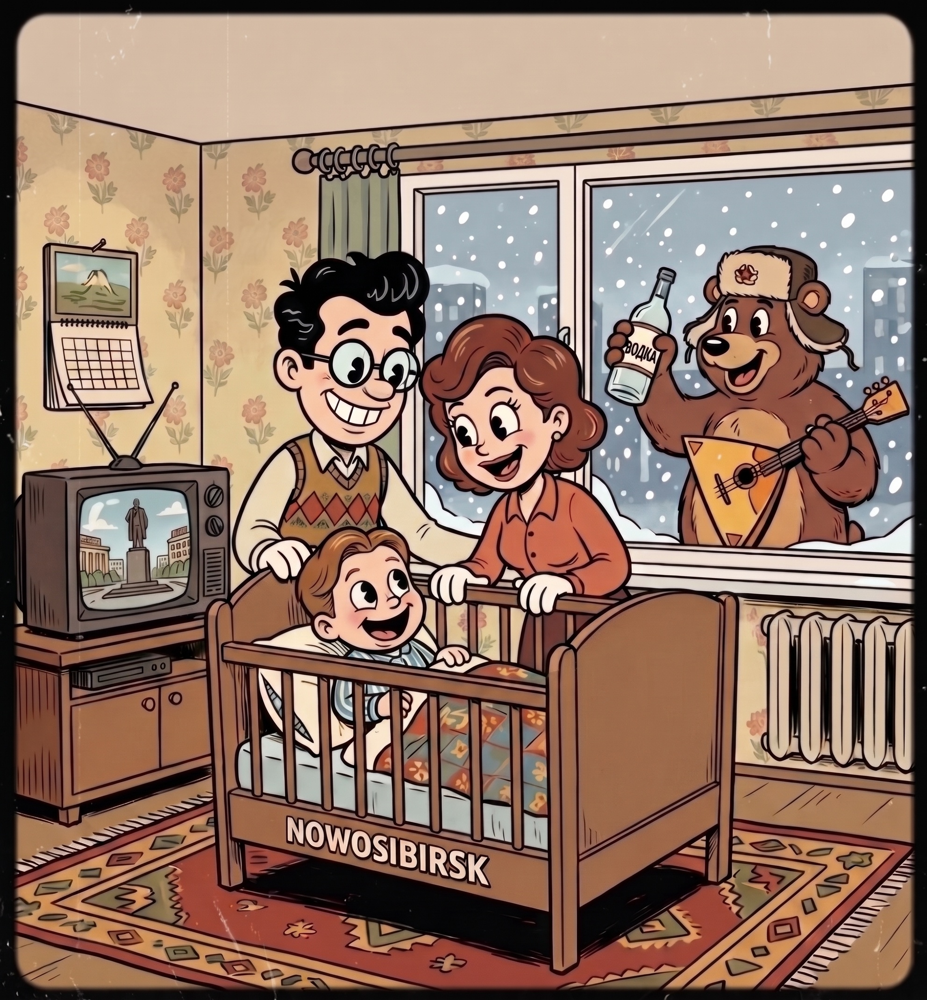
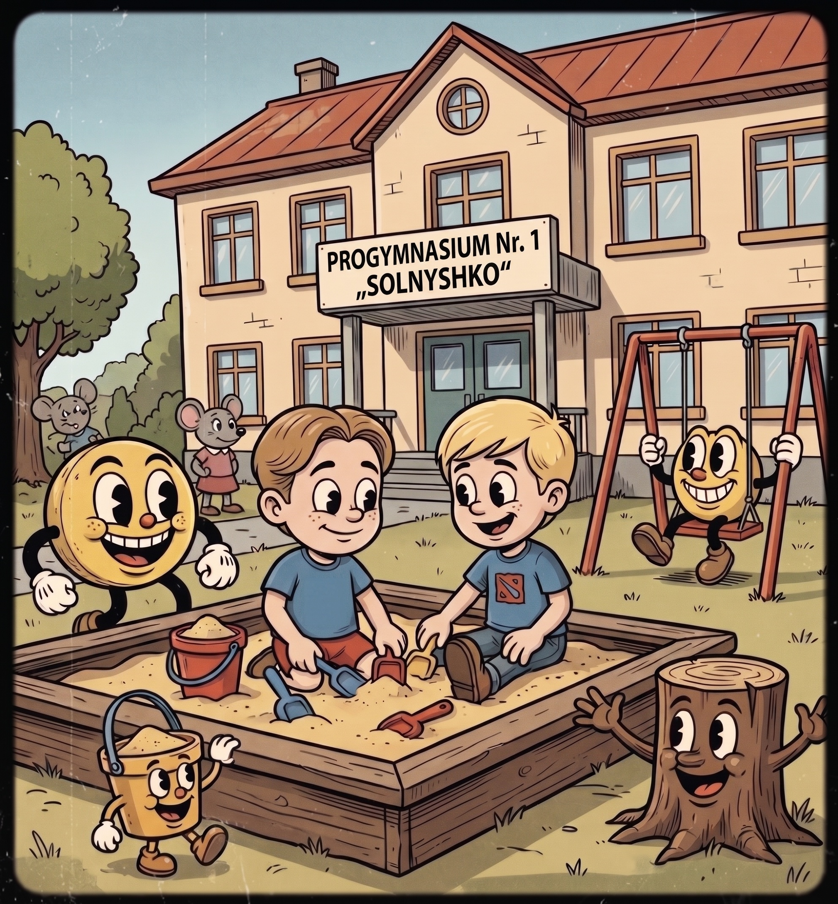
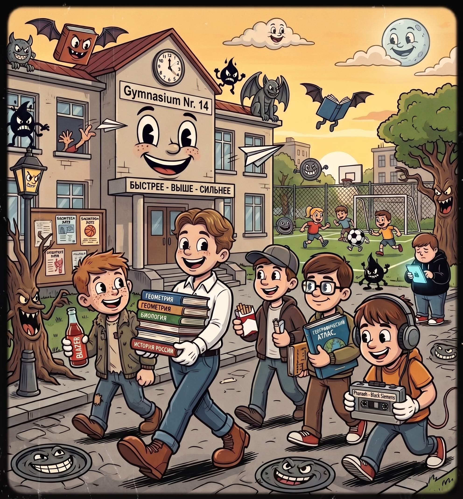
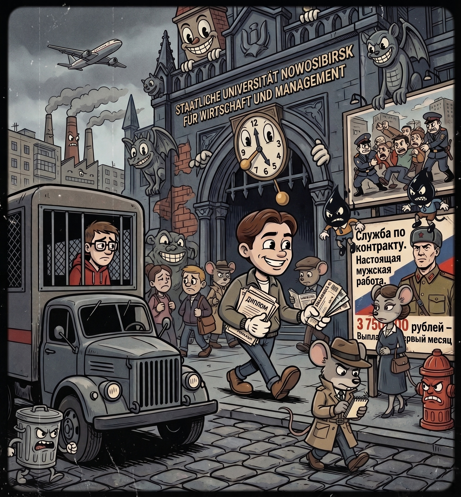
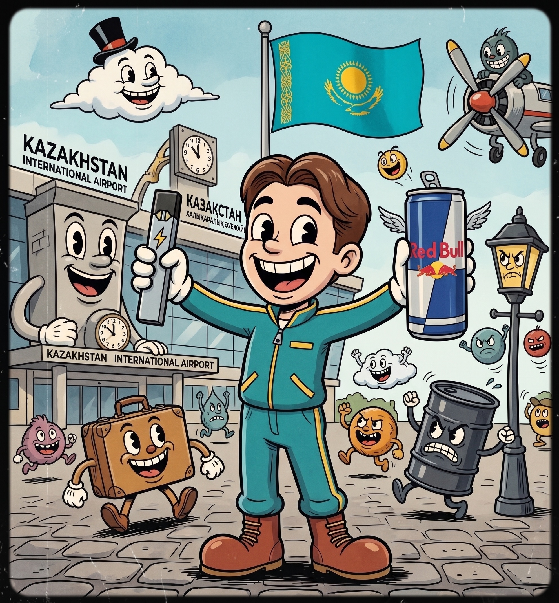
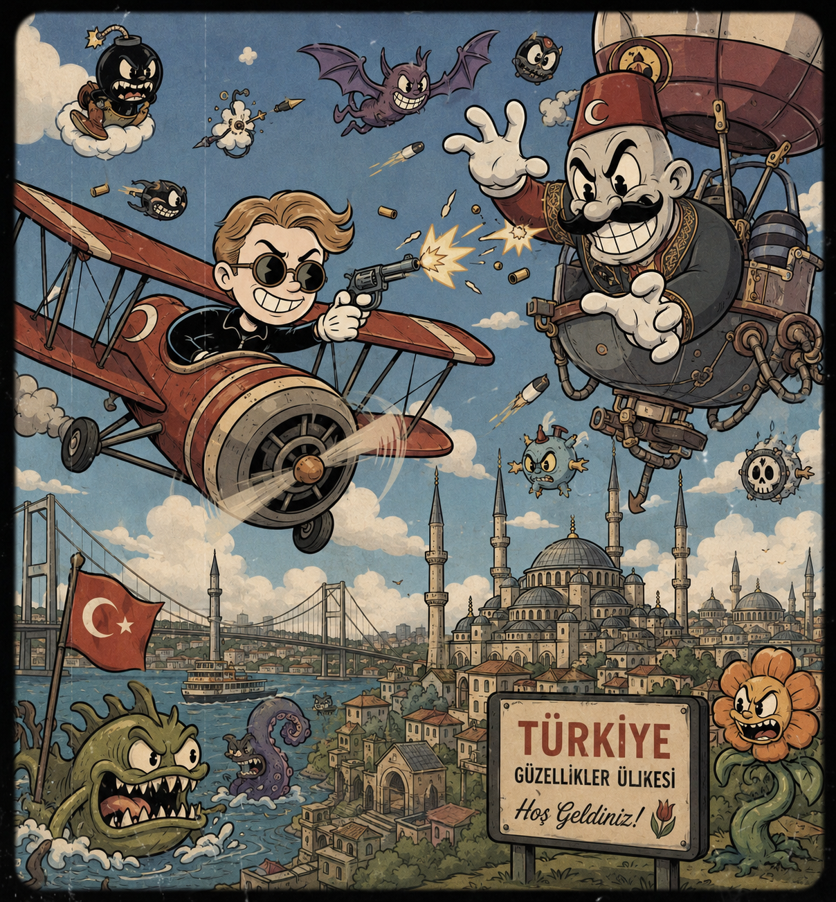
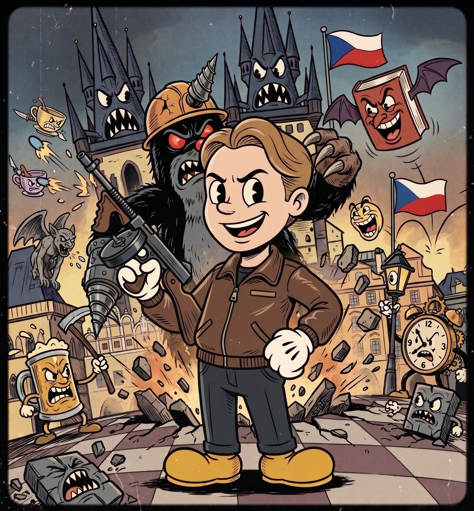
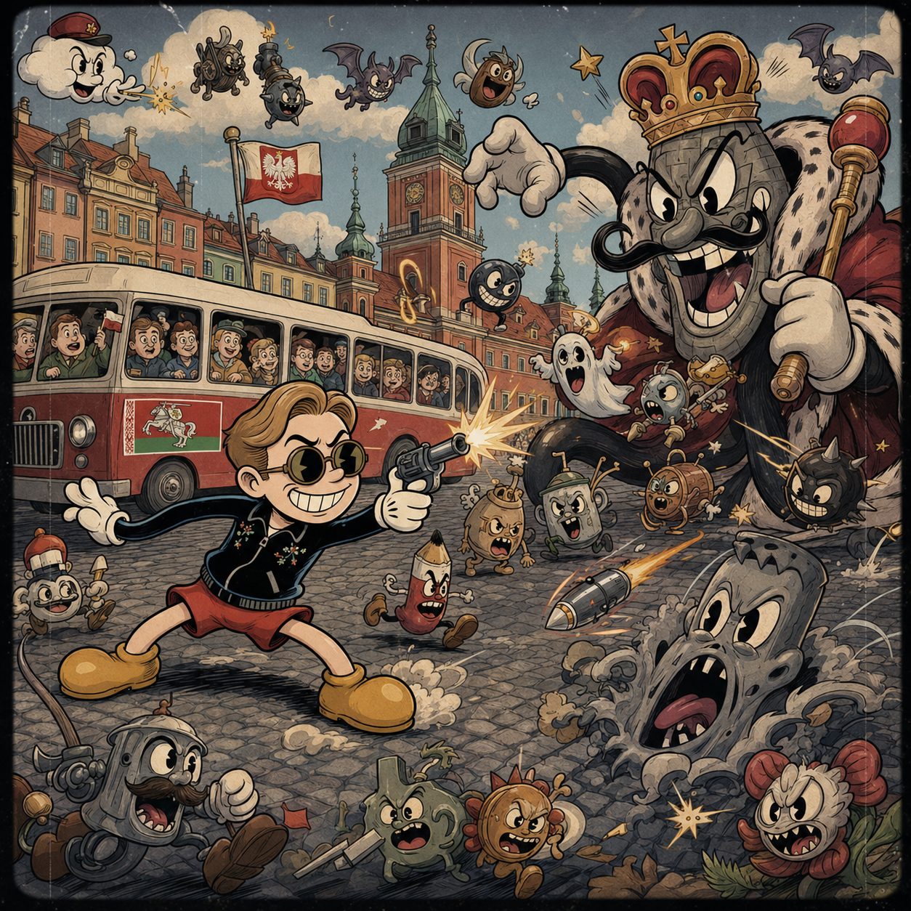
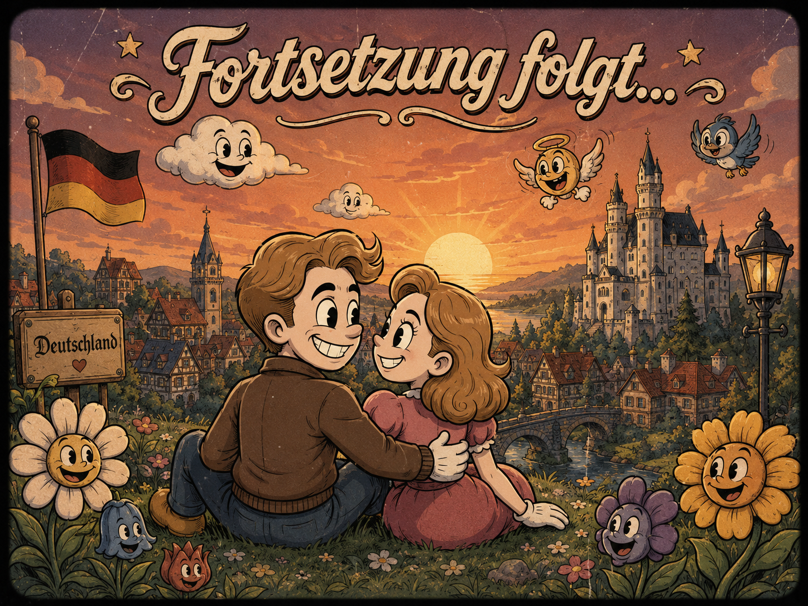

Meine Geschichte
Wie meine Vision zur Realität wurde

Ein Funke im sibirischen Schnee
Meine Reise begann im eisigen Herzen Sibiriens, im weiten Novosibirsk. Während draußen wilde Schneestürme tobten, lag ich wohlbehütet in meiner Wiege. Die Kälte berührte mich nie – denn meine Eltern umhüllten mich von Beginn an mit der Magie ihrer grenzenlosen Liebe.

Die Pforten meiner Kindheit
Als meine Schritte sicherer wurden, führte mein Weg in das Progymnasium Nr. 1, liebevoll „Solnyschko“ genannt. Dort entschlüsselte ich die ersten faszinierenden Klänge der deutschen Sprache – ein magischer Schlüssel zu fernen Welten. Und während ich im Sandkasten meine ersten Burgen erbaute, wuchsen in mir bereits Träume, die weit über den Rand meiner kleinen Realität hinausreichten.

Der Hof der ersten Lehren
In den Jahren der ersten Lehren sammelte ich die ersten Funken des Wissens, während die Welt außerhalb der vertrauten Mauern immer bunter und rätselhafter wurde. Zwischen den Zeilen alter Bücher und dem Flüstern der Gefährten begegnete ich der ersten, süßen Glut des Herzens – ein Licht, das so hell brannte wie gefährlich war. Doch в den schattigen Ecken der Höfe warteten auch bittere Nebel, die mich zum ersten Mal lehrten, dass nicht jedes Feuer wärmt. Es war die Zeit, in der das Kind verging und der Suchende erwachte.
Ein Flüstern des Windes blätterte die Seiten meiner Jugend um...
...die schützenden Mauern fielen, und das wahre Abenteuer rief meinen Namen.

Der Entschluss im Zwielicht
Zwei Jahre lang sog ich begierig das Wissen in den altehrwürdigen Hallen der Universität in mich auf, bis sich dunkle Wolken über meiner Heimat zusammenbrauten. Ein rauer Sturm aus Konflikten und eisernen Restriktionen legte sich wie ein Schatten über das Land. Doch genau in dieser erdrückenden Enge fand mein lang gehegter Traum die Kraft, seine Flügel auszubreiten. Als ich die Akademie mit meinen Dokumenten verließ, ruhte bereits ein Ticket ohne Rückkehr in meiner Tasche. Ein leises, befreites Lächeln spielte auf meinen Lippen – denn ich wusste, dass das wahre Abenteuer gerade erst begann.

Die rettende Oase der Steppe
Die Winde der Freiheit trugen mich in das Land der endlosen Steppen und des goldenen Adlers. Dieser Ort offenbarte sich als rettende Oase, ein stiller Hafen, an dem meine rastlose Seele endlich wieder tiefen Atem schöpfen konnte. Hier, fernab des Sturms, sammelte ich neue Kraft und errang besiegelte Pergamente, die mir als wertvolle Schlüssel dienen sollten, um das große Tor in die Westlande aufzustoßen. Diese weite Ebene war nicht das Ende meiner Reise, sondern das feste Fundament – mein Sprungbrett in ein völlig neues Leben.
Die vertrauten Ufer verblassten im Nebel der Erinnerung...
...und auf rauer See begann ich, mein Segel zu setzen.

Das Erwachen an fremden Ufern
Das erste Kapitel meiner Wanderschaft durch die Westlande entfaltete sich an jenen Ufern, wo sich verschiedene Kulturen begegnen. In diesem Reich der leuchtenden Gewürze und der endlosen Sonne schmeckte ich zum ersten Mal die wahre Weite der Welt. Das Leben erstrahlte in völlig neuen, lebendigen Farben, doch im hellen Licht tanzten unweigerlich auch neue Schatten. Diese unerwarteten Prüfungen rissen den Schleier meiner jugendlichen Naivität fort – mein Geist erwachte, um die wahre, oft raue Tiefe der Welt zu begreifen.

Das Herz aus altem Stein
Dem Flüstern der alten Welt folgend, tauchte ich in ein Königreich der goldenen Türme und verwinkelten Gassen ein. Unter dem stummen Blick jahrhundertealter Burgen atmete ich die geheimnisvolle Magie des Kontinents. Jeder Schritt auf dem alten Kopfsteinpflaster war nun eine Lektion in Besonnenheit. Im Ringen mit den unvermeidlichen Rätseln meines Weges wurde mein Verstand ruhiger, mein Blick schärfer. Ich begann, die stürmischen Wogen des Lebens mit bedachtem Geist zu navigieren.

An den Ufern der Weichsel
Mit jedem Meilenstein wuchs meine innere Stärke, bis sich das geschichtsträchtige Land an der majestätischen Weichsel vor mir ausbreitete. Hier trafen alte Traditionen auf weite Ebenen, und ich fand einen Moment der Stille. Der ungestüme Reisende von einst war gewachsen; die vielen Prüfungen hatten eine stille, eiserne Weisheit in mir geschmiedet. Ich verstand nun das wahre Gewebe des Lebens, sah seine Schönheit und Härte mit klaren Augen. Innerlich gereift und gefestigt, stand ich an diesem Ort bereit für das nächste, große Kapitel, das sich vor mir erhob.
Aus den Träumen des Knaben...
...wuchs der eiserne Wille des Mannes...
...der hinter jedem Ziel eine neue Reise sieht.

Das Reich der verankerten Träume
Mein langer Pfad durch die Stürme führte mich schließlich in das tiefe Herz des
Kontinents, wo alte Wälder ruhen und neue Wurzeln endlich Halt finden. Hier durfte ich
den schweren, staubigen Mantel des Wanderers endgültig ablegen. Mein Name wurde nicht
länger als der eines Fremden geflüstert, sondern mit dem festen Siegel der
Zugehörigkeit in die Chroniken dieser Lande gewebt. Die großen Hallen der Gelehrten
bereiten sich darauf vor, mich in die Welt zu entlassen, und mein Handwerk hat seinen
festen Platz im großen Gefüge der Gesellschaft gefunden.
Doch der wahrhaftigste Schatz dieser neuen Heimat war weder Titel noch Pergament. Es
war das Finden eines Sterns – einer Seele, die durch ihre eigenen, verborgenen Stürme
gereist war, um ihr Licht mit dem meinen zu vereinen. Aus zwei einsamen Pfaden wurde
ein unerschütterliches Band. Nun stehen wir gemeinsam am Rande einer neuen Welt und
blicken auf das endlose Meer des Kommenden. Die Suche eines Einzelnen hat ihr Ende
gefunden – unsere Legende jedoch beginnt gerade erst.